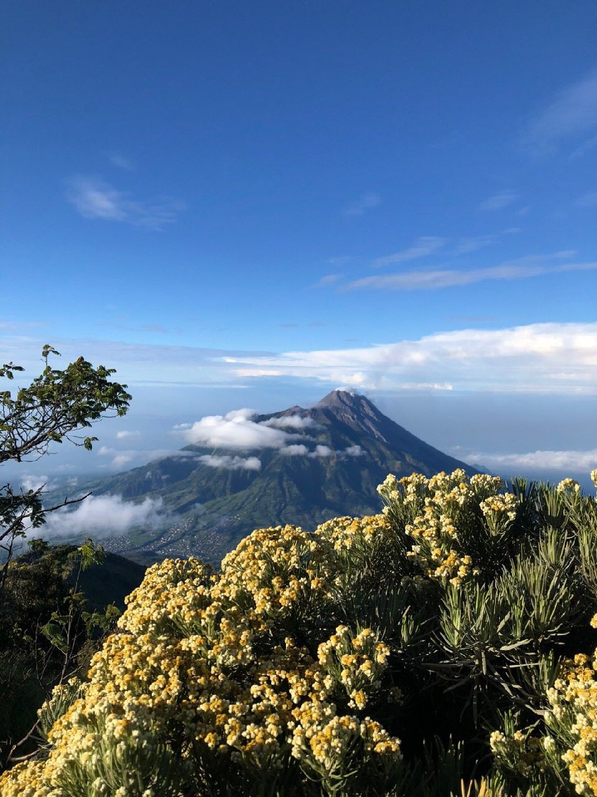

MERBABU MOUNTAIN

Gunung Merbabu merupakan gunung api aktif bertipe strato yang terletak di Provinsi Jawa Tengah terletak di antara Kabupaten Magelang, Boyolali, dan Semarang. Dengan ketinggian mencapai 3.142 MDPL.
Kawasan ini telah resmi ditetapkan sebagai Taman Nasional Gunung Merbabu guna melindungi kekayaan flora, fauna, serta ekosistem hutan tropis pegunungan yang sangat vital bagi wilayah sekitarnya.
Gunung ini sangat terkenal dengan hamparan padang sabana luas yang tampak hijau subur saat musim hujan dan berubah eksotis keemasan saat musim kemarau. Jangan lupa bunga ikoniknya, yaitu bunga edelweis.
Selain itu, posisi Merbabu yang berhadapan langsung dengan kegagahan Gunung Merapi menyajikan pemandangan lanskap yang megah, terutama saat momen matahari terbit yang memikat dari balik samudra awan.